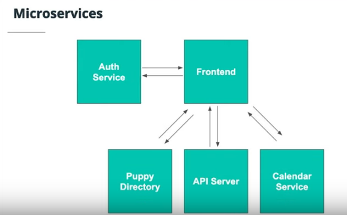

Table of Contents
1 lesson 2: Identity and Authentication
1.1 what is Authentication ?
Authentication is Verifying that users are who they say they are.
hint ==> you should never store be storing plain text password in our data base.
1.2 password and Authentication
1.2.1 HTTP Status Codes
Two status codes which are important throughout this course are:
401 Unauthorized
The client must pass authentication before access to this resource is granted. The server cannot validate the identity of the requested party.
403 Forbidden
The client does not have permission to access the resource. Unlike 401, the server knows who is making the request, but that requesting party has no authorization to access the resource.
For a complete list of status codes, check out the MDN Web Docs
1.2.2 Authentication Methods
- username and password where users login in or sign up using username and password.
- Single Sign-On (SSO) trusting someone else to answer who you are. users trust some engineers in a large robust system to do that for us like sign in with google account.
- Multi-Factor Authentication by sending a radom code to a physical device or other secure service.
- Passwordless the same as Multi-Factor Authentication but without a password.
- Biometric Authentication like fingerprint authentication on cell phone.
1.2.3 why do we use third party for authentication ?
- Developer can incorrectly check.
- Developer can cut corners.
inseat of reinventing the wheel we instead use a robust service.
1.3 microservices architecture
arranges an application as a collection of loosely coupled services. or taking individual responsibilities and split them up into smaller servers or smaller pieces of architecture. if we made a change to any piece we don't have to change other pieces in the stack.

1.4 Common Auth services
1.5 JWT - JSON Web Tokens
consists of (header.payload.signature).
header: contains the algorithm
payload: contains the information that tells us who is making the request, We Will Use A Username Or User Id, But Since The Data in Payload isn't secure so don't insert password or phonenumber in the payload.
signature: we use signature to verify that the data comes from a trusted source, since any one can produce a jwt header and payload we need to verify that the JWT came from a trusted source, if the signature on the server isn't the same as the signature on the auth service we know that the data has been tampered with in transmission.
1.6 Validate JWT
this is a starter code to validate JWT
AUTH0_DOMAIN = @TODO_REPLACE_WITH_YOUR_DOMAIN ALGORITHMS = ['RS256'] API_AUDIENCE = @TODO_REPLACE_WITH_YOUR_API_AUDIENCE class AuthError(Exception): def __init__(self, error, status_code): self.error = error self.status_code = status_code def get_token_auth_header(): """Obtains the Access Token from the Authorization Header """ auth = request.headers.get('Authorization', None) if not auth: raise AuthError({ 'code': 'authorization_header_missing', 'description': 'Authorization header is expected.' }, 401) parts = auth.split() if parts[0].lower() != 'bearer': raise AuthError({ 'code': 'invalid_header', 'description': 'Authorization header must start with "Bearer".' }, 401) elif len(parts) == 1: raise AuthError({ 'code': 'invalid_header', 'description': 'Token not found.' }, 401) elif len(parts) > 2: raise AuthError({ 'code': 'invalid_header', 'description': 'Authorization header must be bearer token.' }, 401) token = parts[1] return token def verify_decode_jwt(token): jsonurl = urlopen(f'https://{AUTH0_DOMAIN}/.well-known/jwks.json') jwks = json.loads(jsonurl.read()) unverified_header = jwt.get_unverified_header(token) rsa_key = {} if 'kid' not in unverified_header: raise AuthError({ 'code': 'invalid_header', 'description': 'Authorization malformed.' }, 401) for key in jwks['keys']: if key['kid'] == unverified_header['kid']: rsa_key = { 'kty': key['kty'], 'kid': key['kid'], 'use': key['use'], 'n': key['n'], 'e': key['e'] } if rsa_key: try: payload = jwt.decode( token, rsa_key, algorithms=ALGORITHMS, audience=API_AUDIENCE, issuer='https://' + AUTH0_DOMAIN + '/' ) return payload except jwt.ExpiredSignatureError: raise AuthError({ 'code': 'token_expired', 'description': 'Token expired.' }, 401) except jwt.JWTClaimsError: raise AuthError({ 'code': 'invalid_claims', 'description': 'Incorrect claims. Please, check the audience and issuer.' }, 401) except Exception: raise AuthError({ 'code': 'invalid_header', 'description': 'Unable to parse authentication token.' }, 400) raise AuthError({ 'code': 'invalid_header', 'description': 'Unable to find the appropriate key.' }, 400) def requires_auth(f): @wraps(f) def wrapper(*args, **kwargs): token = get_token_auth_header() try: payload = verify_decode_jwt(token) except: abort(401) return f(payload, *args, **kwargs) return wrapper